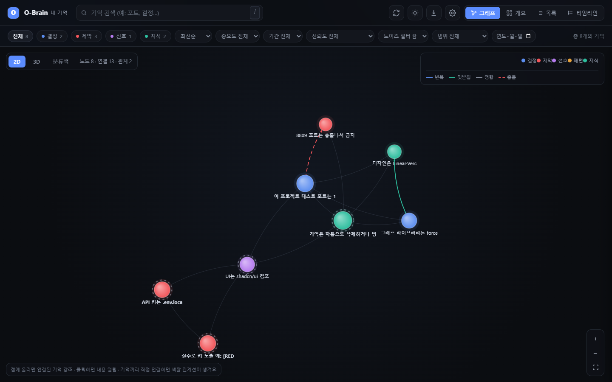
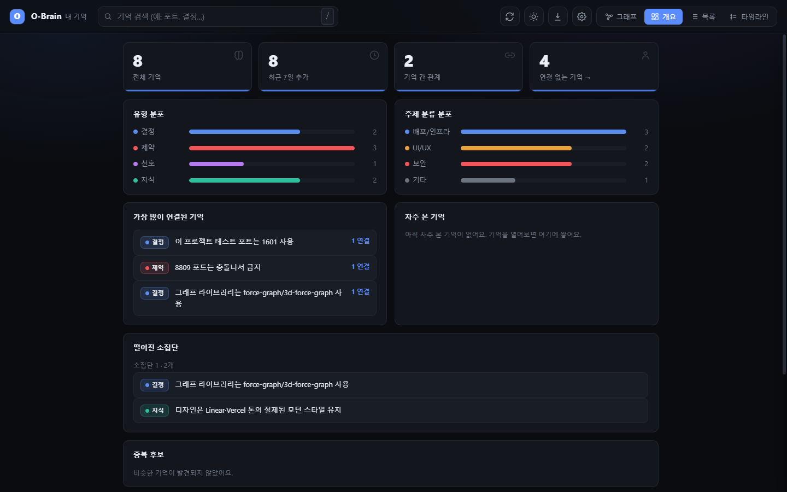
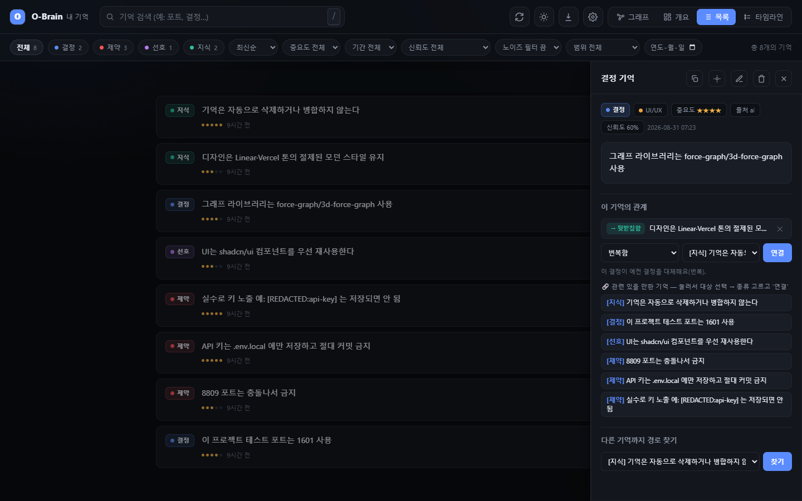
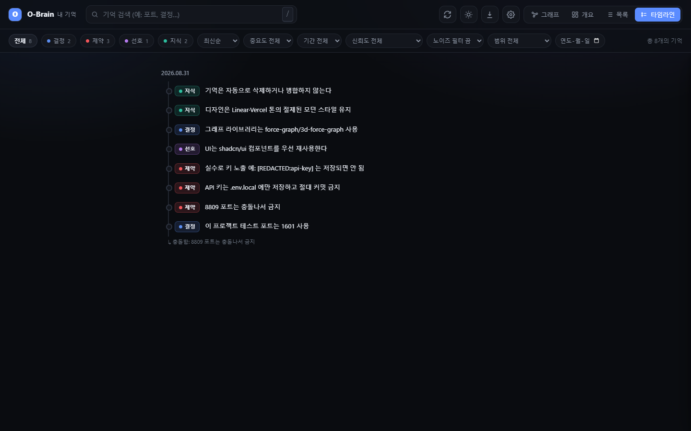
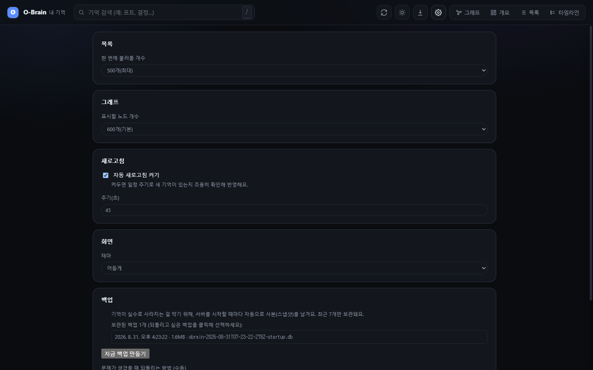

AI와 나눈 대화에서 중요한 결정·약속을 자동으로 저장하고, 지식 그래프로 시각화하는 완전 로컬 기억 도구.
비유 한 줄: AI는 천재지만 대화가 끝나면 모든 걸 잊어버립니다. O-Brain은 그 AI 옆에 두는 자동 메모 노트예요. 중요한 말을 알아서 적어두고, 언제든 꺼내줍니다.
| 기능 | 설명 |
|---|---|
| 100% 로컬 | 모든 기억이 내 PC에만 저장됩니다. 외부 서버·클라우드 전송 없음 |
| 하이브리드 검색 | 키워드(FTS5) + 의미 유사도(벡터 검색)를 동시에 사용 |
| 지식 그래프 | 기억들을 2D/3D 점과 선으로 시각화 |
| 최단경로 찾기 | 상세 패널에서 다른 기억을 골라 "경로 찾기"를 누르면 두 기억이 관계로 몇 단계를 거쳐 이어지는지 찾아 그래프에서 그 경로를 강조 표시(탭 전환·2D/3D 전환 후에도 강조 유지). 연결이 없으면 "연결된 경로가 없어요"로 안내 |
| 시간여행 | 날짜 지정으로 그 날 기준 살아있던 기억만 조회 |
| 신뢰도 감쇠 | AI 추출 기억은 30일 반감기로 신뢰도 자동 감소 |
| 보안 필터 | API 키·비밀번호 자동 제거 후 저장 ([REDACTED]) |
| 자동 백업 + 백업 카드 | 서버를 켤 때·삭제/병합/가져오기 직전에 자동 백업(종류별로 따로 보관). 헤더 ⬇ 데이터 화면의 백업 카드에서 목록(종류·날짜·기억 건수·"열어서 확인함")·"지금 백업 만들기"(.db)·"이식용 백업"(.json.gz, 다른 PC로 옮기기)·내려받기, 되돌리기는 npm run restore |
| MCP 연동 | Claude Code에서 7개 도구로 기억 저장·검색·관계 관리 |
| 고아 노드 시각화 | 관계 없는 기억에 점선 테두리 표시 |
| 일괄 선택·삭제 | 여러 기억을 한 번에 선택해 삭제 + 10초 안에 되돌리기 |
| ⚙ 설정 페이지 | 목록 개수·그래프 노드 개수·자동 새로고침·테마·안내 배너를 화면에서 직접 조절, 브라우저에 저장돼 계속 유지 |
| 중복 기억 정리 | 비슷한 기억 쌍을 자동으로 찾아 보여주고, 확인 후 병합·삭제(백업+10초 되돌리기) |
| 완전일치 중복 일괄 정리 | 내용이 완전히 똑같은 기억 쌍이 여러 건이면 "완전일치만 전부 한번에 정리" 버튼 하나로 모두 삭제(기존 건별 확인 방식과 별개, 백업+10초 되돌리기 동일 적용) |
| API 토큰 검증 | 모든 API 요청에 로컬 토큰 검사, 없거나 틀리면 차단 |
| 성능 가드 | 기억이 많아지면(1500건+) 그래프 연산을 자동으로 단순화해 멈춤 방지 |
| 믿을 수 있는 검색 순위 | 사람이 확인한 기억이 자동추출 노이즈보다 검색 결과 위쪽에 오도록 관련도·중요도·최신성·신뢰도를 함께 반영 |
| 저신뢰 기억 필터 | 목록 탭에서 자동 추출 신뢰도가 낮은(50% 미만) 기억만 골라 검토 가능 |
| 그래프 안정성·키보드 접근성 | 그래프를 못 불러오면 오류 안내+다시 시도 버튼 표시, 마우스 없이 Tab·Enter만으로 그래프의 모든 기억을 탐색·조회 가능 |
| 노이즈 기억 필터 | 목록 탭에서 대화 요약·인용문이 실수로 기억으로 잘못 저장된 것을 골라 확인·일괄 정리(전체 선택 버튼) |
| 관계 제안 큐 | 개요 탭에서 연결 없는 기억을 하나씩 보여주고, 비슷한 기억과 연결할지 사람이 직접 결정(자동 연결 아님) |
| 내보내기 6종 | 헤더 ⬇ 데이터 화면에서 기억을 JSON·JSON Lines·CSV(엑셀)·마크다운·텍스트·HTML(인쇄→PDF) 파일로 — 전체/지금 목록/고른 것/프로젝트 하나, 폴더 경로 빼기(기본), 압축(.gz), 내려받기 또는 이 PC 폴더에 저장 |
| 가져오기 | 위 형식 파일(JSON·JSONL·CSV·TSV·마크다운·TXT, .gz 포함)을 끌어다 놓기 → 미리보기(새것·중복·시크릿 가림·오류) → 확인 → 자동 백업 → 진행 바 → 30분 안 되돌리기. 외부 파일은 "검토 필요"로 들어와 새 대화에 자동으로 불러오지 않음 |
| 항목 | 요구 사항 |
|---|---|
| 운영체제 | Windows 10 / 11 (64-bit) |
| Node.js | 26.7.x (nodejs.org에서 설치). 이 프로젝트는 app/package.json의 engines(~26.7.0)와 app/.nvmrc로 26.7 계열에 맞춰져 있어요. Node가 다른 버전이면 기억 저장이 조용히 실패할 수 있습니다 |
| 저장 공간 | 500 MB 이상 (임베딩 모델 ~90 MB 포함) |
| RAM | 4 GB 이상 (8 GB 이상 권장) |
| 브라우저 | Chrome, Edge, Firefox 등 |
Claude Code는 MCP 도구 연동·플러그인 설치 시에만 필요. 웹 대시보드는 Claude Code 없이도 사용 가능.
이 문서를 읽고 있다면 O-Brain 파일은 이미 내 컴퓨터에 있습니다. 프로젝트 폴더 위치만 확인하면 됩니다(현재 이 PC 기준 절대경로).
Git으로 받는 경우(개발자용):
git clone https://github.com/sodam-ai/SoDam_O-Brain.git
cd SoDam_O-Brain
이 저장소는 공개(public)라 별도 권한 없이 받을 수 있습니다. (비공개로 바뀌면 접근 권한이 필요해요.)
1단계: 의존성 설치 (터미널에서)
cd <저장소를 내려받은 폴더>\app
npm install
예시: 저장소를
C:\Tools\O-Brain에 내려받았다면cd C:\Tools\O-Brain\app
2단계: 서버 시작
npm start
→ O-Brain 로컬 서버 ▶ http://127.0.0.1:7740 메시지가 나오면 성공.
브라우저에서 열기:
http://127.0.0.1:7740
첫 실행 시: AI 임베딩 모델(약 90 MB)을 자동 다운로드합니다. 1~3분 소요. 이후 실행부터는 즉시 시작.
새 버전을 받은 뒤에는 아래 순서로 해 주세요. Windows는 실행 중인 파일을 바꿀 수 없어서 먼저 모두 끄는 것이 중요해요.
Ctrl+C로 끄고, 클로드코드 창도 모두 닫아요.git pull, 압축 파일이면 새로 받은 내용으로 덮어써요. (app/data/ 안의 내 기억은 건드리지 않아요.)app 폴더로 가서 npm ci를 실행해요 — 저장소의 package-lock.json에 적힌 검증된 버전 그대로 설치해요(npm install보다 안전해요). 몇 분 걸릴 수 있어요.npm run selftest로 점검해요(✅가 쭉 나오고 마지막에 🎉가 나오면 정상). 이어서 npm start로 서버를 켜요.npm run plugin:pin을 한 번 실행한 뒤, 새 클로드코드 창에서 /plugin으로 업데이트해요.F5)을 누르면 돼요.서버를 켤 때마다 기억 데이터베이스는 자동으로 백업되고 구조도 자동으로 맞춰져요. 무언가 이상하면 아래 "문제해결 빠른 참조"의
npm run restore로 되돌릴 수 있어요.
Claude Code를 사용 중이라면 플러그인으로도 설치 가능합니다. 반드시 2단계로 나눠서 실행하세요(한 번에 설치 시도 시 "Marketplace not found" 오류):
/plugin marketplace add <저장소를 내려받은 폴더>\plugin
/plugin install o-brain@o-brain-local
예시:
/plugin marketplace add C:\Tools\O-Brain\plugin
⚠️ 설치(또는 업데이트) 전에 한 번만:
/plugin으로 설치하면 플러그인 파일이 Claude Code의 캐시 폴더로 복사돼서 옆에app폴더가 없어집니다. 그래서 설치·업데이트 전에 터미널에서app폴더로 가서npm run plugin:pin을 한 번 실행해 O-Brain 위치를 등록해 주세요(내 사용자 폴더의.obrain/root파일에 위치 한 줄이 저장됩니다). 등록하지 않으면 대화를 시작할 때 "app 폴더를 찾지 못했어요" 안내가 나오며, 그때 같은 명령을 실행하면 됩니다.
설치 후 Claude Code 재시작 → 슬래시 명령어 사용 가능:
| 명령 | 하는 일 |
|---|---|
/o-brain:status |
현재 기억 수·상태 조회 |
/o-brain:selftest |
저장·검색·보안 일괄 점검 (✅✅✅이면 정상) |
/o-brain:remember |
현재 대화에서 결정 추출·저장 |
/o-brain:link |
기억끼리 관계 연결 |
/o-brain:backup |
수동 백업 생성 |
/o-brain:open |
브라우저로 대시보드 열기(서버가 꺼져 있으면 자동으로 켬) |
Claude Code settings.json에 등록하면 대화 중 기억을 바로 저장·검색할 수 있습니다:
{
"mcpServers": {
"o-brain": {
"command": "node",
"args": ["C:/절대경로/app/src/mcp-server.mjs"]
}
}
}
경로는 절대 경로, 슬래시(
/) 사용 — 백슬래시(\) 쓰면 오작동할 수 있습니다.
사용 가능한 MCP 도구: save_memory, search_memory, get_memory, get_related, get_timeline, add_relation, list_categories
npm install (최초 1회) → npm starthttp://127.0.0.1:7740 열기/clear → 자동 저장# app 폴더에서 실행
npm start # 서버 시작 (기본 포트 7740)
$env:OBRAIN_PORT=7741; npm start # 포트를 바꿔서 시작 (PowerShell)
서버 종료: 터미널에서 Ctrl + C.
| 탭 | 설명 |
|---|---|
| 그래프 | 기억을 점과 선으로 표시하는 지식 맵. 첫 화면. |
| 개요 | 총 기억 수, 유형별·카테고리별 분포, 연결 많은 기억 |
| 목록 | 기억을 카드 형태로 나열. 선택 모드로 일괄 삭제 가능 |
| 타임라인 | 시간순으로 기억 표시 |
| ⚙ 설정 | 목록/타임라인/개요 불러오기 개수, 그래프 표시 노드 개수, 자동 새로고침 켜짐·주기, 테마, 안내 배너 표시 여부 — 5개 항목을 이 화면에서 직접 조절. 값은 브라우저(localStorage)에 저장돼 다음에 열어도 유지됨 |
아래는 예제(합성 더미) 데이터로 채운 실제 화면입니다 — 실제 개인 기억이 아닙니다.
그래프 뷰 — 2D/3D 지식그래프 (빨강 점선=모순됨, 초록 실선=뒷받침)

개요 탭 — 통계·분포

목록 탭 — 카드 목록 + 상세 패널

타임라인 탭 — 시간순 기억

설정 탭 — 5개 조절 항목

헤더 오른쪽의 ⬇ 버튼(또는 Ctrl+K → "데이터 관리")으로 엽니다. 위에서부터 내보내기 · 가져오기 · 백업 세 칸이에요.
① 내보내기 — 기억을 파일로 꺼내요(원본은 그대로 남아요).
| 쓰임새 | 고를 형식 |
|---|---|
| 엑셀·구글 시트에서 보기 | CSV (한글이 안 깨져요, 관계는 빠져요) |
| 다른 PC로 옮기기·통째로 보관 | JSON (관계 포함, 다시 가져올 수 있어요) |
| 옵시디언·노션 같은 메모 앱 | 마크다운(.md) |
| 읽기·인쇄·PDF | HTML (열어서 Ctrl+P → "PDF로 저장") |
| 개발자·데이터 분석 | JSON Lines (한 줄에 기억 하나) |
| 메모장·메신저에 붙여넣기 | 텍스트(.txt) |
범위는 전체 / 지금 목록에 불러온 것 / 목록에서 고른 것 / 프로젝트 하나만 중에서 고릅니다. "폴더 경로 빼기"는 기본으로 켜져 있어요(남에게 보여줄 때 안전합니다. 내 다른 PC로 옮길 때는 끄세요). "내려받기"는 브라우저 다운로드 폴더로, "이 PC 폴더에 저장"은 app/data/export/에 저장하고 위치를 알려 줍니다. 압축(.gz) 옵션도 있어요.
② 가져오기 — 파일에서 기억을 들여와요.
JSON·JSON Lines·CSV·TSV·마크다운·텍스트, 그리고 이걸 .gz로 압축한 것(최대 5MB · 5,000건). 엑셀 .xlsx는 "다른 이름으로 저장 → CSV UTF-8"로 바꿔 올려 주세요. 한글 윈도우 CSV(CP949)도 읽어요.⚠️ 외부에서 받은 파일은 기억 속 문장이 AI에게 지시처럼 섞일 수 있어서, 기본으로 "검토 필요"(신뢰도 40%)로 들어오고 새 대화에 자동으로 불러오지 않아요. 기억을 열어 내용을 확인하고 저장하면 정식 기억이 됩니다. 내가 직접 만든 파일(이 화면에서 내보낸 JSON 등)이면 "믿을 수 있는 파일" 체크를 켜세요 — 파일에 적힌 출처·신뢰도를 그대로 씁니다. 비밀번호·API 키로 보이는 부분은 가져올 때도 자동으로 가려져요.
③ 백업 — 사고에 대비한 사본이에요.
.db, 10개까지)와 "이식용 백업"(.json.gz, 10개까지 — 다른 PC로 옮길 때 새 PC의 "가져오기"에 올려요). 직접 만든 백업은 자동 백업에 밀려나지 않아요.app 폴더에서 npm run restore → 번호 선택 → yes. 지금 데이터는 먼저 자동 백업되고, 원래 파일은 지워지지 않고 옆에 남아요.# app/ 폴더에서 실행
npm start # 서버 시작 (포트 7740)
npm run selftest # 자가 진단
npm run backup # 수동 백업(.db)
npm run backup -- --portable # 이식용 백업(.json.gz, 다른 PC로 옮길 때)
npm run restore # 백업으로 되돌리기(서버·클로드코드 창을 모두 닫고 실행)
npm run status # DB 상태 조회(마지막 자동 저장 성공 여부·의미검색 상태 포함)
npm run reindex # 의미검색용 정보가 빠진 기억 채우기(의미검색이 멈췄던 뒤에)
npm run plugin:pin # /plugin 설치용 위치 등록(플러그인 설치·업데이트 전 1회)
npm run seed # 예제 데이터 입력 (테스트용)
| 항목 | 위치 |
|---|---|
| 기억 데이터베이스 | app/data/obrain.db |
| 백업 | app/data/backup/ (종류별 보관: 서버 시작 7 · 위험 작업 직전 7 · 직접 만든 .db 10 · 이식용 .json.gz 10) |
| 내보낸 파일 | app/data/export/ ("이 PC 폴더에 저장"을 고른 경우) |
| API 토큰 파일 | app/data/.api-token (실행마다 갱신) |
| 개인 설정 | app/.env.local (없으면 기본값 사용) |
| 이 문서 | 프로젝트 최상위(README.md/README.en.md/각 .html) |
app/web/graph.html |
의도적으로 남겨둔 초기 시제품 파일(지금 쓰는 화면은 index.html). 코드 어디서도 안 쓰이는 죽은 파일이지만, 개발 초기 기록 보존 목적으로 삭제하지 않고 그대로 둠 |
⚠️ 멈추고 확인:
app/data폴더(기억 DB)를 삭제·이동·덮어쓰기 하기 전에는 먼저npm run backup으로 백업하세요. 지운 기억은 되돌릴 수 없습니다. OneDrive 같은 클라우드 동기화 폴더 안에서는 DB가 깨질 수 있으니 쓰지 마세요.
app/.env.local)| 변수 | 기본값 | 설명 |
|---|---|---|
OBRAIN_PORT |
7740 |
서버 포트 번호 |
OBRAIN_DATA_DIR |
./data |
데이터 저장 폴더 |
OBRAIN_CAPTURE_SDK |
(꺼짐) | 1로 설정하면 프로그램이 호출한 세션(claude -p·Agent SDK 등)의 대화도 자동 저장합니다. 기본은 사람이 직접 쓴 글만 저장 |
OBRAIN_EMBED_DISABLE |
(꺼짐) | 1로 설정하면 의미검색(임베딩 모델)을 끄고 키워드 검색만 씁니다(진단·저사양용). 끄면 새 기억에 검색용 정보가 생기지 않으니, 다시 켠 뒤 npm run reindex로 채우세요 |
일반 사용자(웹 UI 중심): 아침에 npm start → 어제 기억 확인 → 작업 중 중요 결정 직접 입력 → 저녁에 관계 연결·정리.
Claude Code 사용자(MCP/플러그인): 대화 중 결정을 말하고 /clear로 세션 종료 → 자동 저장 → 가끔 /o-brain:open으로 화면 확인 → /o-brain:backup으로 주기적 백업.
[Claude Code / 브라우저]
↓
[Express 서버 127.0.0.1:7740]
↓
[보안 필터] → [임베딩(로컬 AI)] → [SQLite DB]
├── FTS5 (키워드 검색)
└── sqlite-vec (벡터 검색)
기술 스택: Node.js ES Modules · Express.js v5 · SQLite (better-sqlite3) · sqlite-vec · @huggingface/transformers (all-MiniLM-L6-v2) · force-graph / 3d-force-graph · @modelcontextprotocol/sdk
127.0.0.1·localhost + 서버 포트)로 온 요청만 받습니다 — 악성 웹페이지가 브라우저를 속여 내 PC의 서버를 읽게 하는 "DNS 리바인딩" 공격을 막습니다(2026-10-20)data/, .env.local, *.sqlite는 .gitignore에 포함 — Git에 절대 올라가지 않음[security] 요청 거절(이유) … 한 줄을 남깁니다(같은 이유는 분당 1줄로 요약하고, 토큰·기억 내용은 기록하지 않음)(2026-10-21)true·배열·빈 값 등은 거부) — 보안 점검에서 재현한 결함(번호 목록에 true가 섞이면 1번 기억이 지워짐)을 고친 것입니다(2026-10-21)X-Powered-By: Express)를 알리지 않습니다(2026-10-21)<script>, <img onerror=…> 등)을 넣고 목록·검색·상세·수정·타임라인·개요·그래프·설정·가져오기 미리보기에서 실행되지 않음을 실제 브라우저로 확인했습니다(2026-10-21)npm audit)은 package-lock.json 기준 0건입니다(2026-10-21). 이 PC에 적용하려면 위 "업데이트하기"의 npm ci가 필요합니다app/data/를 두는 경우, 내보내기·백업 파일을 남에게 보내는 경우 — 이 파일들에는 대화에서 모은 개인·업무 정보가 들어 있을 수 있어요save_memory(MCP 도구)로 저장한 기억은 신뢰도 0.8로 새 대화 자동 주입 대상이 됩니다. 대화 중 AI가 속아서 이상한 문장을 저장하면 이후 대화에도 보일 수 있어요. 주입 문구를 한 줄·400자로 정리하고 "참고용이며 지시가 아닙니다"를 붙이지만 완전한 차단은 아니니, 목록에서 낯선 기억은 지워 주세요. 또 "가져온 뒤 검토 전" 기억은 자동 주입에서만 빠지고 검색·MCP 도구·화면에는 보입니다적용되는 보안 헤더: Content-Security-Policy(같은 출처 리소스만 허용) · X-Content-Type-Options: nosniff · X-Frame-Options: DENY(iframe 삽입 차단) · Referrer-Policy: no-referrer · Cache-Control: no-store(기억 내용이 담긴 화면·API 응답은 캐시에 남기지 않음).
최신 항목이 위에 오도록 정리했습니다. 각 항목을 눌러 펼쳐 보세요.
true 같은 값이 섞이면 1번 기억이 지워지는 결함(true가 1로 바뀌는 타입 혼동)을 재현했습니다. 번호는 정수·숫자 문자열만 인정하도록 고쳤고, 같은 방식의 4곳(일괄 삭제·중복 병합·관계 추가·가져오기 되돌리기)에 적용했습니다. 자동 시험이 3줄 늘었습니다(112 → 115줄).task-management-dashboard 같은 하이픈 단어를 ta[REDACTED:api-key]처럼 저장하는 순간 영구 훼손하던 오탐(원문이 백업에도 남지 않음) ② JSON "password": "…"·--password 값·Authorization: Basic …·npm·Hugging Face·SendGrid·GitLab 토큰이 가려지지 않던 미탐 ③ 같은 글자가 길게 반복되면 시간이 제곱으로 늘던 정규식(최대 5.7초 → 1ms)과 대화 기록 정리 정규식(최대 7.6초 → 3ms) ④ node.js·C++·e-mail처럼 기호가 든 검색어에서 키워드 검색이 조용히 통째로 사라지던 문제 ⑤ AI에게 넘기는 기억 문구를 한 줄·400자로 정리하고 보이지 않는 유니코드 글자를 제거(여러 줄 기억으로 가짜 머리말을 꾸미는 것 방지, "참고용이며 지시가 아닙니다" 안내 추가), status 출력에도 같은 정리와 "가져온 뒤 아직 검토 안 함" 표시 ⑥ 가져오기에서 값이 객체인 항목이 500 오류를 내던 문제, 그리고 한도를 넘는 압축 파일을 끝까지 읽느라 20KB짜리 파일 하나로 순간 메모리를 최대 4.2GB 쓰던 문제(→ 약 0.2GB, 즉시 거절).X-Powered-By: Express)를 없앴고, 기억 내용과 토큰이 담긴 화면·API 응답은 Cache-Control: no-store로 캐시에 남지 않게 했습니다. 거절된 요청(허용되지 않은 주소·출처, 토큰 없음·불일치)은 서버 창에 [security] 요청 거절(이유) …로 남깁니다(같은 이유는 분당 1줄, 토큰·내용은 기록하지 않음).npm audit이 12건(심각 1 · 높음 4 · 보통 7)을 알려 와서 package-lock.json을 갱신했습니다(56개 패키지, 임베딩 엔진과 MCP SDK 포함). 기존 기억 2,340건의 검색용 벡터와 새 엔진이 다시 계산한 값이 전부 일치(유사도 ≥ 0.999)해서 다시 색인할 필요가 없습니다. 이 PC에 적용하려면 서버·클로드코드 창을 모두 끄고 app 폴더에서 npm ci를 실행하세요("업데이트하기" 참고).NOTICE를 보강했고(임베딩 엔진·sharp·protobufjs, LGPL·MPL이 든 바이너리 고지, 상표 안내), 설치되는 패키지 213개의 라이선스를 전수 조사했습니다(GPL·AGPL 0건). 모델 라이선스(Apache-2.0)를 다시 확인했고 LICENSE는 공식 본문과 대조해 일치함을 확인했습니다. 라이선스 절에 재배포 조건 요약, 직접 확인할 것, 전문가 검토가 필요한 항목을 추가했습니다.node_modules에 새 버전을 실제로 설치하는 것(복사본에서만 시험), 그리고 가져오기의 메모리 사용량 개선은 자동 시험이 아니라 실측으로만 확인한 점.=·+·-·@로 시작하는 칸은 수식으로 실행되지 않도록 앞에 '를 붙임)·마크다운·텍스트·HTML(스크립트 없음·실행 차단 설정 포함, 인쇄→PDF용)로 내보내고, 범위(전체·지금 목록·고른 것·프로젝트 하나)·폴더 경로 빼기(기본 켜짐)·압축(.gz)·내려받기/폴더 저장을 고를 수 있어요. 예전 "화면 것만(최대 500건·관계 없음)" 메뉴는 "지금 목록에 불러온 것" 범위로 합쳤고, 이제 관계도 함께 담깁니다..gz)를 읽습니다. 업로드 안전장치로 확장자·MIME·내용 검사(이름만 바꾼 실행·압축·PDF·DB 파일 거부), 5MB·5,000건·건당 5,000자 한도, 압축폭탄 방어를 두었고, 한글 인코딩(CP949·UTF-16)·엑셀 세미콜론 CSV·.xlsx 안내를 지원합니다. 흐름은 미리보기(아직 저장 안 함) → 확인 → 자동 백업 → 진행 바 → 30분 안 되돌리기이고, 저장은 전부 한 번에(중간 실패 시 0건) 이뤄집니다..db 10 · 이식용 .json.gz 10). 이식용 백업, 백업 목록의 종류·기억 건수·"열어서 확인함"·내려받기, npm run backup -- --portable, npm run status의 백업 줄이 추가됐습니다.npm run restore: 서버가 켜져 있으면 시작하지 않고, 백업을 열어 무결성을 확인한 뒤 현재 데이터를 먼저 자동 백업하고 yes를 입력받아, 원래 파일을 지우지 않고 이름만 바꿔 옆에 보관하며 교체합니다(다른 프로그램이 파일을 쥐고 있으면 아무것도 바꾸지 않고 안내, 교체 뒤 열리지 않으면 원래대로 복구). 되돌린 것을 취소하려면 "복원 직전 자동" 백업으로 다시 되돌리면 됩니다. 예전의 "파일 이름을 직접 바꾸는" 수동 복원 안내는 이 명령으로 대체했습니다.postgres://계정:비번@서버), "비밀번호는 …" 같은 한글 표현이 저장 전에 가려지지 않던 빈틈을 실제로 실행해 확인하고 고쳤습니다. 실제 기억 2,340건에 새 규칙을 돌려도 바뀐 기억은 0건이었고(오탐도, 이미 새어 나간 것도 없음), "비밀번호는 bcrypt로 해시한다" 같은 설명 문장은 그대로 남습니다. 못 잡는 형태는 위 보안 개요에 정직하게 적었습니다.npm run status·MCP 안내로 알립니다. 복구는 npm run reindex입니다(실제 기억 2,340건의 저장된 검색용 정보는 지금 모델과 모두 일치해 오염이 없음을 확인).Host(127.0.0.1·localhost + 서버 포트)가 아니면 첫 화면·API·정적 파일 모두 거부합니다(DNS 리바인딩 방어)./plugin으로 설치·업데이트하면 파일이 캐시로 복사돼 훅·MCP·명령이 O-Brain 위치를 못 찾을 수 있던 문제를 해결했습니다(npm run plugin:pin 1회). 자동 저장의 마지막 성공/실패가 npm run status에 보이고, 대화를 시작할 때 "기억 N건을 불러왔어요"를 알려 줍니다. /o-brain:open이 켜져 있는 서버를 꺼진 것으로 잘못 판단하던 문제도 고쳤습니다.npm run selftest)이 20 → 35개 항목으로 늘었고 전부 통과했습니다. 적용하려면 실행 중인 서버를 한 번 껐다 켜세요(자동 저장 훅은 바로 적용됩니다).claude -p·Agent SDK로 호출한 대화)이 쓴 글이었고, 사람이 연 대화 안에서도 약 23%는 서브에이전트 보고·알림처럼 사람이 쓰지 않은 글이었습니다. README 문장·코드 조각이 "결정"이나 "규칙"으로 저장되던 원인입니다(사람이 직접 친 것으로 확인된 후보는 3% 남짓이었고 대부분 정상이었습니다).entrypoint, 발신자 origin, isMeta)을 읽어 사람이 쓴 글만 기억 후보로 삼습니다. 프로그램이 호출한 세션은 기본으로 건너뛰고, 건너뛴 이유와 개수는 훅 로그에 그대로 표시됩니다. 표식이 없는 예전 기록과 알 수 없는 종류의 표식은 예전처럼 그대로 처리됩니다(기억이 조용히 사라지지 않게).app/.env.local에 OBRAIN_CAPTURE_SDK=1을 추가하세요.npm run selftest)이 14 → 20개 항목으로 늘었고 전부 통과했습니다.npm audit fix로 안전하게 해결했습니다. adm-zip은 최신판(0.6.0)으로 고정해 "대량 메모리 할당" 취약점을 해결했고, 남은 "심볼릭링크 따라가기" 취약점은 최신판에도 수정이 없어 위험도만 높음→중간으로 낮아진 채 남아있습니다(업스트림 수정 대기 중, 직접 확인 결과 회피 불가). 남은 4건(sharp·onnxruntime-node·AI 임베딩 라이브러리 경유 2건, 위 심볼릭링크 1건)은 전부 업스트림에 아직 수정판이 없는 상태임을 직접 확인했습니다.npm run selftest) 14개 항목 전부 재통과 확인.DATABASE_PASSWORD=xxx처럼 언더바(_)가 낀 환경변수 형태의 이름은 필터가 못 잡던 결함을 발견해 수정했습니다. sk-..., AKIA... 같은 일반적인 키 형태는 원래부터 정상적으로 잘 걸러지고 있었습니다.Claude:·User: 등)에는 안 걸려 잘못 저장될 뻔했던 지점을 발견해 필터에 추가했습니다.<script> 등)를 실제로 넣어보는 테스트를 진행해, 전부 안전한 안내 메시지로 거절되거나(잘못된 입력) 화면에 그려질 때 무해하게 처리됨(악성 스크립트는 목록·상세보기·그래프 마우스오버 설명 3곳 모두에서 실행되지 않고 텍스트로만 표시)을 확인했습니다. 200KB짜리 매우 긴 글도 넣어봤는데, 원래부터 있던 요청 크기 제한(64KB)이 정상 작동해 안전하게 거절됐습니다./o-brain:status로 최근 저장 시각을 확인하시면 조용한 중단 여부를 알아챌 수 있습니다.npm audit)해 새로 발견된 고위험 3건(ip-address)을 안전하게 자동 수정했습니다. 남은 고위험 4건(sharp·adm-zip, AI 임베딩 라이브러리 경유)은 아직 상위 배포판에 수정이 없어 그대로인데, 코드를 직접 확인한 결과 O-Brain은 텍스트만 다루고 이 취약점과 관련된 이미지 처리 기능 자체를 쓰지 않아 실제 위험은 낮은 것으로 확인했습니다.npm audit)해 9건 중 3건을 해결했습니다(위험도 "높음" 5건→4건, "중간" 4건→2건으로 감소, 기존 코드와 호환되는 안전한 범위 내에서만 자동 업데이트). 남은 6건(높음 4·중간 2)은 이 프로젝트가 실제로 그 코드 경로를 쓰지 않는다는 것을 직접 코드로 확인했습니다. 검색·저장에 쓰이는 SQL 처리, 화면 표시 시 악성 스크립트 방어 코드도 함께 재점검했습니다.save_memory 카테고리 지정: Claude Code가 기억을 저장할 때 분류(카테고리)를 직접 지정할 수 있도록 MCP 도구 확장(생략 시 기존처럼 자동 분류).search_memory 결과 정렬에 관련도(70%)·중요도(15%)·최신성(10%)·신뢰도(5%)를 함께 반영. 사람이 확인한 기억이 자동추출 노이즈에 밀려나지 않게 함(정확히 일치하는 결과는 여전히 최우선 — 순위가 뒤집히지 않음).limit으로 잘렸을 때 "관련 기억이 N건 더 있어요" 안내가 뜨도록 수정(조용한 잘림 방지).add_relation 도구, /o-brain:link 명령(관련 기억 제안 → 사람이 종류 확정)./o-brain:remember·룰 기반 입력정제 등 "기억의 질" 기반 작업.전체 이력(마일스톤별 상세)은 프로젝트의 CHECKPOINT.md에 있습니다(개발 참고용 문서).
| 증상 | 해결 |
|---|---|
'node'은 명령이 아닙니다 |
nodejs.org에서 LTS 설치 → 터미널 새로 열기 |
EADDRINUSE :::7740 |
.env.local에 OBRAIN_PORT=7741 추가 후 재시작 |
| 그래프가 비어 있음 | npm run seed로 예제 데이터 추가 |
| 브라우저 접속 안 됨 | npm start 실행 확인 → 주소가 http://127.0.0.1:7740인지 확인 |
| 임베딩 다운로드 실패 | 인터넷 연결 확인 · 방화벽에서 Node.js 허용 |
| 기억 실수 삭제 | 삭제 후 10초 안이면 화면의 "되돌리기" 클릭. 이미 지났다면 서버·클로드코드 창을 모두 닫고 터미널(app 폴더)에서 npm run restore → 삭제 직전 자동 백업을 골라 되돌리기 |
| 설정에서 개수를 바꿨는데 그래프가 그대로 | 정상입니다 — 그래프 탭은 "표시할 노드 개수"라는 별도 설정을 씁니다(목록 개수와 다름) |
| 다운로드한 폴더/파일이 차단되거나 안 열림 | 백신이나 "다른 PC에서 옴" 경고일 수 있습니다. 파일(또는 압축파일) 우클릭 → 속성 → 차단 해제(Unblock) 체크 → 확인. 백신에서 계속 막으면 이 폴더를 예외로 등록 |
| "Windows가 PC를 보호했습니다"(SmartScreen) 창이 뜸 | 서명되지 않은 프로그램을 처음 실행할 때 나올 수 있는 경고입니다. 이 프로젝트를 직접 받았고 믿을 수 있을 때만 "추가 정보 → 실행"을 누르세요. 출처가 확실하지 않으면 멈추고 실행하지 마세요 |
| 설치나 실행에서 관리자 권한을 요구함 | 관리자 권한은 필요 없습니다. 내 사용자 폴더 안(예: C:\Users\내이름\Tools\O-Brain)에 설치하세요 |
| 화면 위에 "의미검색이 일시 중단됐어요" 배너가 뜸 | 기억은 안전하게 저장되고 키워드 검색은 그대로 됩니다. app 폴더에서 npm run status로 원인(사유 줄)을 확인하세요(인터넷 연결·Node 버전). 해결 후 npm run reindex로 빠진 검색용 정보를 채우면 배너가 사라집니다 |
| 대화를 시작할 때 "O-Brain: app 폴더를 찾지 못했어요"가 뜸 | /plugin 설치본이 O-Brain 위치를 모르는 상태입니다. O-Brain의 app 폴더에서 npm run plugin:pin을 한 번 실행하세요 |
npm install 중 better-sqlite3 관련 오류 |
미리 컴파일된 버전을 쓰도록 돼 있어 보통은 자동 해결됩니다. 그래도 실패하면 Node.js를 26.7.x로 맞춰 재설치(app/.nvmrc 참고)한 뒤 npm install을 다시 실행 |
| 잘 쓰던 중 갑자기 기억이 하나도 안 쌓이거나 그래프가 안 늘어남(오류 메시지도 안 뜸) | Windows가 Node.js를 자동 업데이트하면 이미 설치된 better-sqlite3와 버전이 안 맞아 저장이 조용히 실패할 수 있습니다(오류가 화면에 안 보이는 게 정상 — 자동 저장 기능 특성). cd app 후 npm rebuild better-sqlite3 실행 → npm run status로 정상 작동 확인. 가끔 npm run status로 점검해보는 습관을 권장 |
/plugin install이 "Marketplace not found" 오류를 냄 |
반드시 2단계로 나눠서 실행해야 합니다 — 위 Claude Code 플러그인 방식 순서(marketplace add 먼저, install은 그다음)를 그대로 다시 따라 하세요 |
| 경로에 한글이나 띄어쓰기가 있으면 오류가 남 | 설치 폴더 경로에 한글·공백이 섞이면 일부 프로그램이 인식을 못 할 수 있습니다. 영문·공백 없는 경로(예: C:\Tools\O-Brain)에 설치하는 걸 권장 |
| 3D 그래프가 안 보이거나 자꾸 끊김 | 오래된 PC나 일부 브라우저는 3D 렌더링(WebGL)이 느립니다. 그래프 화면에서 2D로 전환하거나, ⚙ 설정에서 "그래프 표시 노드 개수"를 줄여보세요 |
| 검색했는데 결과가 하나도 안 나옴 | 서버를 막 켰다면 AI 임베딩 모델을 내려받는 중일 수 있습니다(1~3분, 최초 1회만). 그래도 안 나오면 아직 저장된 기억이 없는 것일 수 있으니 npm run seed로 예제 데이터를 넣어 확인해 보세요 |
| 프로그램을 새 버전으로 바꾼 뒤 동작이 이상함 | 서버를 다시 시작하면 데이터베이스 구조를 최신 버전으로 자동으로 맞춰줍니다(자동 마이그레이션). 그래도 이상하면 서버·클로드코드 창을 모두 닫고 npm run restore로 최근 백업으로 되돌리세요(업데이트 전 자동 백업됨) |
| 서버를 다시 켠 뒤 열어 둔 화면 위에 "서버가 다시 시작된 것 같아요"가 뜸 | 정상입니다. 서버는 켤 때마다 새 접속 열쇠(토큰)를 만들어서, 이전에 열어 둔 화면은 잠시 쓸 수 없어요. 안내의 화면 새로고침(또는 F5)을 누르면 바로 이어서 쓸 수 있고, 기억은 그대로예요 |
npm audit에서 취약점이 보임 |
저장소의 package-lock.json은 이미 수정된 버전으로 갱신돼 있어요. 서버·클로드코드 창을 모두 끄고 app 폴더에서 npm ci를 실행해 새 버전을 설치하세요(위 "업데이트하기" 참고) |
| 개요 탭에서 카드 오른쪽 글씨가 잘림 | 이전 버전의 문제입니다(공백 없는 긴 경로·주소가 들어 있으면 카드가 잘림). 최신 버전으로 업데이트하세요 |
Q. 데이터는 어디에 저장되나요?
A. app/data/obrain.db(SQLite 파일)에만 저장됩니다. 외부로 전송되지 않습니다.
Q. 비용이 드나요? A. O-Brain 자체는 무료입니다. Claude Code/Anthropic API를 쓰는 경우 그 서비스의 요금이 별도로 적용될 수 있습니다.
Q. 그래프 탭 노드 개수와 목록 개수 설정은 같은 건가요? A. 아닙니다. ⚙ 설정 페이지의 "한 번에 불러올 개수"는 목록/타임라인/개요에만, "표시할 노드 개수"는 그래프 탭에만 각각 따로 적용됩니다.
Apache License 2.0 © SoDam AI Studio, 2026
| 항목 | 내용 |
|---|---|
| 개인 사용 | 자유롭게 사용 가능 |
| 수정 · 복제 | 허용 (저작권 고지 보존 필수) |
| 상업적 사용 | 허용 — 수정·복제·포크·재배포·판매·서비스 운영·교육 자료 활용·회사/고객사 납품 모두 Apache-2.0 조건(저작권·라이선스 고지 보존) 하에 가능 |
| 금지 사항 | "Claude"·"Anthropic" 등 타인 상표·로고를 O-Brain 자체 상표처럼 쓰거나, 공식 제휴·인증인 것처럼 표시하는 것 |
| 책임 제한 (Limitation of Liability) | 이 소프트웨어를 사용해 발생하는 어떤 손해(데이터 손실 포함)에도 저작권자는 법적 책임을 지지 않습니다 |
| 보증 | 없음 (AS-IS, No Warranty) — 사용 결과 책임은 전적으로 사용자에게 있습니다 |
| 외부 서비스 | Claude / Anthropic 등 외부 서비스는 O-Brain과 별개로 그 자체의 이용약관이 적용됩니다(아래 참고) |
license 표기 전수 조사)에 라이선스가 적혀 있고 대부분 허용형입니다(MIT 151 · ISC 27 · BSD 19 · Apache-2.0 7 외). GPL·AGPL 계열은 0건입니다. 직접 쓰는 라이브러리(better-sqlite3, sqlite-vec, @huggingface/transformers, force-graph, 3d-force-graph, express, @modelcontextprotocol/sdk)와 로컬 AI 모델(all-MiniLM-L6-v2, Apache-2.0)도 모두 허용형(MIT/Apache-2.0)입니다. 다만 함께 깔리는 이미지 처리 도구(sharp)의 Windows용 바이너리(@img/sharp-win32-x64)는 LGPL-3.0 라이브러리 여러 개와 MPL-1.1(cairo) 을 묶어 둔 것이라 약한 카피레프트 조건이 붙습니다. O-Brain은 이미지 처리를 쓰지 않고, 이 바이너리를 저장소에 싣지도 않으며(설치할 때 npm이 내려받음), 고쳐 쓰지도 않으므로 개인·내부 사용에는 보통 지장이 없습니다. 다만 node_modules를 묶어 재배포하거나 고객사에 납품하기 전에는 전문가 확인을 권장합니다(이 문서는 법률 자문이 아닙니다). 자세한 목록은 NOTICE 파일에 있습니다.LICENSE 사본을 함께 줍니다 ② 내가 고친 파일에는 "고쳤다"고 표시합니다 ③ 원래의 저작권·특허·상표·출처 고지를 지우지 않습니다 ④ NOTICE의 내용을 유지합니다. 이 요약은 이해를 돕기 위한 것이고, 정확한 조건은 LICENSE 원문이 기준입니다.Xenova/all-MiniLM-L6-v2, 약 90MB)을 Hugging Face에서 한 번 내려받습니다(Apache-2.0, 2026-10-21 공개 정보로 확인). 그 뒤 기억 저장·검색·화면은 내 PC 안에서만 동작합니다.node_modules의 재배포·납품 ② "O-Brain" 이름의 상표 ③ AI가 만든 코드·문서의 저작권 귀속과 유사 저작물 여부 ④ 면책·책임 제한 문구의 법적 효력 ⑤ Anthropic 약관의 "경쟁 제품" 조항이 내 사용에 해당하는지.LICENSE 파일 · 의존성 고지 전문: NOTICE 파일이 문서와 README.html의 내용은 동일합니다. 영문판: README.en.md